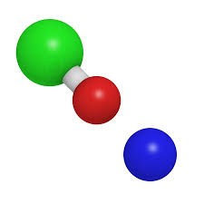

Cloro (Elemento)
Hipoclorito de sodio (Compuesto) - NaClO
Dióxido de cloro (Compuesto) - ClO2

NaClO

ClO2

NaClO Propiedades físicas
-Apariencia: Verde (líquido, diluido). Blanco (solido)
-Densidad: 1110 kg/m3, 1,11 g/cm3
-Punto de fusión: 291 K (18°C)
-Punto de ebullición: 374 K (101°C)
NaClO Propiedades químicas
-Acidez: <7 Pka
-Solubilidad en agua: 29:3 g/100mL (0°C)
CIO2 propiedades fisicas
-Peso molecular 66.96 g/gmol
-Punto de fusión: -59°C
CIO2 propiedades quimicas
-En su estado puro es de color amarillo rojizo
-Su solubilidad en agua a presión atmosférica es de 3g/L
©2023 Todos los derechos reservados a: Alejandra Díaz, Anna Sofía Gómez, Sophia Jaime, Carolina Madrigal, Andrea Sophia Martínez, Sara Pérez.